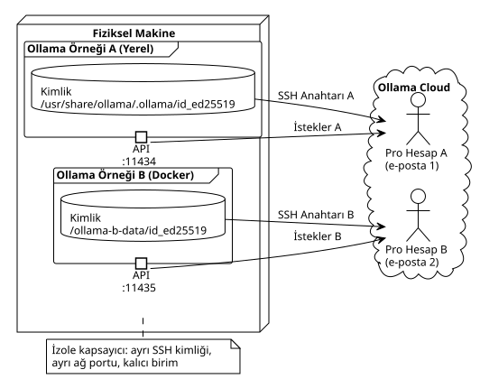

Docker ile Aynı Makinede İki Ollama Pro Aboneliğini Birleştirmek
Yayınlandı: 08 May 2026
İki Pro aboneliği, tek bir makine, tek bir banka kartı ve sıfır ağ çakışması. Docker’ın, ikinci bir bilgisayar satın almadan bulut çıkarım kapasitemi nasıl iki katına çıkarmamı sağladığına dair bir hikaye.
Giriş
Birkaç aydır OpenCode oturumlarımı bulut modelleriyle beslemek için Ollama Pro kullanıyorum. Mevzu şu ki, Pro aboneliğiyle bile, aynı anda birden fazla ajan çalıştırdığınızda rate limiting (hız sınırlaması) engeline hızla takılıyorsunuz. Açık çözüm: ikinci bir abonelik.
Ama işte şimdi trajedi başlıyor.
Ollama her makineyi benzersiz bir SSH anahtarı —meşhur Device Key— ile tanımlar. Aynı işletim sistemi üzerindeki iki örnek aynı kimliği paylaşır ve iki Pro hesabını aynı cihaza bağlamak imkansızdır. Ve tahmin edeceğiniz üzere, sırf bunun için ikinci bir dizüstü bilgisayar satın almayacaktım.
Çözüm: hile yapmak. Ollama’ya, aynı CPU’yu, aynı RAM’i ve aynı ağ bağlantısını paylaştıkları halde, iki farklı makine üzerinde çalıştığına inandırmak. Docker bize mükemmel bir izolasyon balonu sunacak.

Neden İki Kez Aynı Şey?
Bana akıl hastası demeden önce, kullanım durumunu açıklama izin verin.
Tek bir Pro aboneliği ile … gibi bir modeli başlatabilirim`deepseek-v4-pro:cloud`bir OpenCode oturumunda. Sorun, iki eşzamanlı oturum istediğimde ortaya çıkıyor. Hız sınırlama (rate limiting) kotaları nedeniyle ikinci oturum kasılıyor veya tamamen reddediliyor.
İki bağımsız Pro aboneliği ile:
-
Oturum OpenCode 1 → Pro Hesap A (
localhost:11434) -
Session OpenCode 2 → Pro Hesap B (
localhost:11435)
Her otururumun kendi kotası, kendi bağlamı vardır ve diğerini engellemez. Bu, insani bir multi-processing’dir.
|
İki Pro aboneliği = iki farklı e-posta. Aynı banka kartı çalışıyor — Ollama ödeme sistemi, aynı ödeme yönteminden yapılan birden fazla aboneliği engellemiyor. Kontrol ettim. |
Sorunun Özü: Device Key
Ollama’yı yüklediğinizde, kimlik dizininde bir ed25519 SSH anahtar çifti oluşturulur:
$ cat /usr/share/ollama/.ollama/id_ed25519.pub
ssh-ed25519 AAAAC3NzaC1lZDI1NTE5AAAAI...Bu anahtar, Ollama sunucularına şu sırasında yüklenir:`ollama signin`. « Bu makine şu Pro hesaba aittir » diyen odur. Eğer iki örneğiniz aynı dosyayı paylaşıyorsa`id_ed25519`, aynı kimliği paylaşıyorlar. Oyun bitti.
Çözüm: ikinci örneğimize, Docker hacminde izole edilmiş kendi kimlik dizinini vermek.
Mise en Place — Adım Adım
Ön koşullar
-
Çalışır durumda yerel bir Ollama kurulumu (resmi betik`curl | sh`)
-
Docker yüklendi ve çalışıyor
-
Dağıtım için Portainer veya docker-compose
-
İki farklı e-posta adresiyle iki Ollama hesabı
Sürümünü kullandım`0.20.2`— resmi betik ve ilgili Docker imajı tarafından sağlanan.
Adım 1: Birimi Oluşturun
Ana bilgisayar üzerindeki basit bir dizin, B örneğinin kimliği için kalıcı bir birim görevi görecektir:
mkdir -p ~/ollama-b-dataBu klasör, Docker konteynerine şu şekilde bağlanacaktır:`/root/.ollama`, Ollama’nın kimlik anahtarlarını, geçmişini ve modellerini sakladığı yer.
Adım 2: Docker Konteynerini Başlatma
# docker-compose.yml
services:
ollama-instance-b:
image: ollama/ollama:0.20.2
container_name: ollama-instance-b
ports:
- "11435:11434"
volumes:
- /home/cheroliv/ollama-b-data:/root/.ollama
environment:
- OLLAMA_HOST=0.0.0.0
restart: alwaysBurada olan şu:
-
Liman11435ana makinenin … şuna eşlendiği11434konteynırın dahili. Böylece Docker örneği şurada dinler`:11435`işgal eden yerel örnekle çakışmadan`:11434`Lütfen çevrilmesini istediğiniz metni sağlayın.
-
Hacim`~/ollama-b-data`üzerine monte edilmiştir`/root/.ollama`— SSH kimliği burada saklanacak.
-
`OLLAMA_HOST=0.0.0.0`konteynerin harici bağlantıları kabul etmesini sağlar.
Bu stack’i Portainer üzerinden yayına aldım, ancak basit bir`docker compose up -d`de aynı şekilde çalışır.
Adım 3: Genel Anahtarı Almak
Konteyner ilk başlatıldığında boş olduğu için, Ollama volume içinde otomatik olarak yeni bir SSH anahtar çifti oluşturur. Genel anahtarı şu şekilde alırız:
$ docker exec ollama-instance-b cat /root/.ollama/id_ed25519.pub
ssh-ed25519 AAAAC3NzaC1lZDI1NTE5AAAAIDDQ+dvnfmuo49q5O8LOlvgZ39SKORFw47ry9k4H2jPcBu anahtarın yerel örneğinkinden farklı olduğunu kontrol ediyorum:
# Instance native
$ cat /usr/share/ollama/.ollama/id_ed25519.pub
ssh-ed25519 AAAAC3NzaC1lZDI1NTE5AAAAIGyF...(différente)
# Instance Docker
$ cat ~/ollama-b-data/id_ed25519.pub
ssh-ed25519 AAAAC3NzaC1lZDI1NTE5AAAAIDDQ...(différente)İki ayrı anahtar, iki ayrı kimlik. İşte bu kadar.
|
Konteynerınız yeniden başlatılırsa, volume içindeki anahtarları yeniden kullanır. Kimlik kalıcıdır. Pro hesap ile olan ilişkiyi kaybetmezsiniz. |
Adım 4: Anahtarı Ollama.com üzerinde Kaydedin
Yönlendirme https://ollama.com/settings/keys → Add SSH Key. Docker örneğinin genel anahtarını yapıştırıyoruz ve onaylıyoruz.
Ardından, bu kimliği Pro B hesabına bağlıyoruz:
$ docker exec -it ollama-instance-b ollama signinTarayıcı açılır, B hesabının e-postası ile giriş yapılır ve token, konteynerin SSH anahtarıyla ilişkilendirilir. Her şeyin yolunda olduğu kontrol edilir:
$ docker exec -it ollama-instance-b ollama signin
User: cherolivproAdım 5: Ücretsiz Küçük Bir Model ile Test Etme
Pro abonelik ücretini göze almadan önce, hattın çalıştığından emin olmak istiyorum. Bağlantıyı doğrulamak için yerel ve ücretsiz küçük bir model pull ediyorum:
$ docker exec ollama-instance-b ollama pull qwen3:0.6b
pulling manifest
pulling 7f4030143c1c: 100% ▕██████████████████▏ 522 MB
success
$ curl -s http://localhost:11435/api/tags
{"models":[{"name":"qwen3:0.6b","model":"qwen3:0.6b",...}]}Liman`11435`yanıt verir, model sunulur. B örneği canlıdır.
Rahatladıktan sonra, gerçek cloud Pro modelinin pull işlemine geçiyorum:
$ docker exec ollama-instance-b ollama pull deepseek-v4-pro:cloud
pulling manifest
pulling 31c3059e137e: 100% ▕██████████████████▏ 344 B
successbulut modelinin manifestosu için 344 bayt — normal, çıkarım sunucu tarafında yapılıyor, yerelde değil. Ve işte nihai test:
$ curl -s http://localhost:11435/v1/chat/completions \
-H "Content-Type: application/json" \
-d '{"model":"deepseek-v4-pro:cloud","messages":[{"role":"user","content":"Dis bonjour en une phrase courte."}]}'
{
"id": "chatcmpl-480",
"model": "deepseek-v4-pro",
"choices": [{
"message": { "content": "Bonjour !" },
"finish_reason": "stop"
}],
"usage": { "total_tokens": 181 }
}Sana da merhaba, örnek B.
/v1/models` API Tuzağı
Aptalca bir detay yüzünden 20 dakika kaybettim. Provider’ı yapılandırdığımda`ollama-b`OpenCode’da, model seçicide hiçbir şey görünmüyordu. Hiçbir şey. Koca bir sıfır.
Sebep mi? API`/v1/models`B örneğinin döndürdüğü`{"object":"list","data":null}`yerine`{"object":"list","data":[]}`hiçbir model çekilmediğinde. Değer`null`OpenCode tarafındaki ayrıştırmayı (parsing) bozuyordu ve bu nedenle sağlayıcı (provider) görüntülenmiyordu.
Çözüm: Modelleri dinamik keşfe güvenmek yerine OpenCode yapılandırmasında açıkça tanımlamak.
{
"$schema": "https://opencode.ai/config.json",
"provider": {
"ollama": {
"npm": "@ai-sdk/openai-compatible",
"name": "Ollama (local)",
"options": { "baseURL": "http://localhost:11434/v1" },
"models": {
"gemma4:e2b": { "name": "Gemma 4 E2B (local)" }
}
},
"ollama-b": {
"npm": "@ai-sdk/openai-compatible",
"name": "Ollama Instance B (Docker)",
"options": { "baseURL": "http://localhost:11435/v1" },
"models": {
"qwen3:0.6b": { "name": "Qwen3 0.6B (B)" },
"deepseek-v4-pro:cloud": { "name": "DeepSeek V4 Pro (B)" }
}
}
}
}Bu açık beyanla birlikte, OpenCode B sağlayıcısını ve modellerini anında görür. Bir oturum yeniden başlatmasıyla, seçici`/models`iki örneği yan yana görüntüler.
|
Eğer özel sağlayıcınızı (custom provider) görmüyorsanız`/models`, terminalinizi yeniden başlatmak için saatlerce vakit kaybetmeyin. Modelleri manuel olarak şuraya tanımlayın:`opencode.json`— bu sorunu anında çözer. |
Sonuç: İki Oturum, İki Hesap, Sıfır Çatışma
Sonuç olarak, aynı anda iki OpenCode oturumu başlatabilirim:
Session 1 → /models → Ollama (local) → deepseek-v4-pro:cloud → Compte A
Session 2 → /models → Ollama Instance B (Docker) → deepseek-v4-pro:cloud → Compte BHer oturumun kendi kotası, kendi hız sınırı (rate limit) vardır ve birbirine engel olmaz. Aynı makine, aynı kredi kartı, iki farklı e-posta.
Ve en iyisi mi? Docker konteyneri şurada:`restart: always`. Manuel müdahale gerektirmeden sistem yeniden başlatmalarından sonra hayatta kalır.
Çıkarılan Dersler
-
Docker her şeyi, kimliği bile izole eder— Basit bir bind mount hacmi, bir konteynere kendi SSH anahtar setini sağlamak için yeterlidir ve bu da onu Ollama’nın gözünde farklı bir fiziksel makineden ayırt edilemez kılar.
-
İki e-posta, aynı CB— Ollama, aynı ödeme yöntemiyle yapılan çoklu abonelikleri engellemez. Yalnızca e-posta adresi farklı olmalıdır.
-
Ödemeden önce ücretsiz deneyin — Un
ollama pull qwen3:0.6b(modèle libre, 522 Mo) permet de valider toute la chaîne réseau sans débourser un centime. Vous validez le plomberie d’abord, vous activez le Pro ensuite. -
data: null` ile
/v1/modelsOpenCode’u bozuyor— Eğer özel bir sağlayıcıyı (custom provider) şu şekilde yapılandırırsanız`"models": {}`, OpenCode modelleri API üzerinden keşfetmeye çalışır. API yanıt verirse`data: null`, provider görünmüyor. Modelleri açıkça tanımlayın. -
İki hesap, insan çoklu işlemlemedir (multi-processing)— Bir Pro hesap = bir aktif OpenCode oturumu. İki hesap = iki paralel oturum. Aynı anda birden fazla Gradle projesi arasında geçiş yapan biri için bu, tam anlamıyla bir game changer.
Daha Fazla Bilgi İçin
Makale 2026-05-08 tarihinde yayınlandı